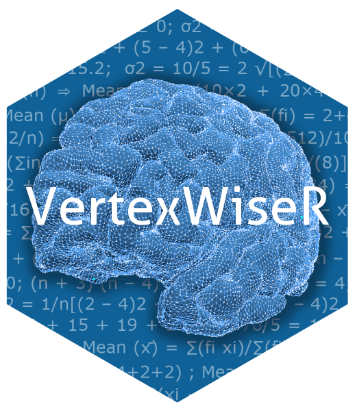
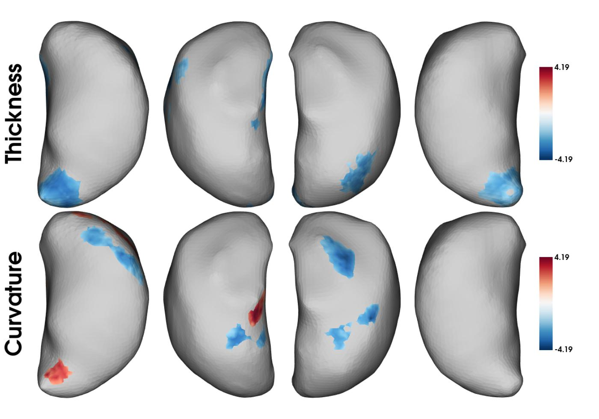
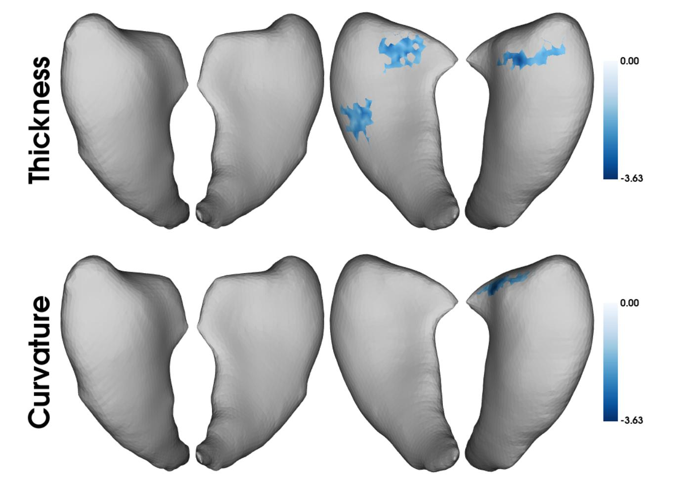
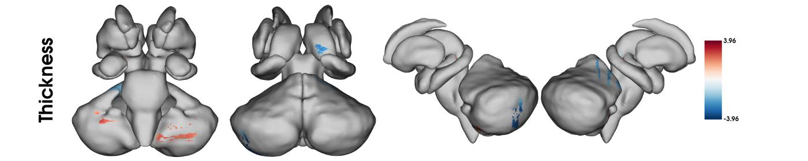
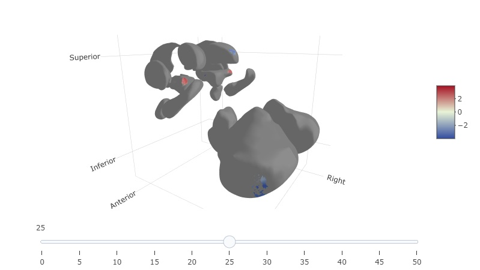

Example analyses with VertexWiseR - Example 3
Charly H. A. Billaud
2026-03-09
VertexWiseR_Example_3.RmdThis article introduces vertex-wise statistical modelling of subcortical surfaces as per update v1.5.0. The subcortical surfaces it is currently compatible with are based on the “ASeg” (Automated subcortical segmentation) parcellation computed in FreeSurfer (Fischl 2012). The latter volumes are converted to 3D meshes and surface-based metrics (thickness, surface area, curvature) produced using the python module SubCortexMesh. VertexWiseR can extract the measures obtained with the latter package.
Requirements
Analysis and manipulation of the subcortical surfaces require
additional utility data (~19.9 MB) to be downloaded and stored in the R
package’s external data
(system.file('extdata',package='VertexWiseR')). A prompt
will automatically be triggered to assist downloading it whenever
subcortical surfaces are inputted (users can trigger it themselves by
typing VertexWiseR:::aseg_database_check()).
Extracting ASeg subcortical surfaces
SubCortexMesh’s surface metric output in template space can be extracted by VertexWiseR as in the other surface extraction functions, generating compact (bilateral) matrices for all applicable subcortical surfaces. Here is an example of code which was run to obtain the demo data:
aseg_CTv = ASEGvextract(sdirpath = 'surface_metrics/', outputdir = "aseg_matrices/",measure = 'thickness', roilabel = c('thalamus','caudate'), subj_ID = TRUE)Example analysis on the thalamus and caudate nuclei
The analysis will use surface data already extracted in R from a preprocessed subjects directory, which we make available so you do not need to preprocess a sample yourself. To obtain it, we had thickness and curvature metrics data from a SubCortexMesh processing directory of the SUDMEX_CONN dataset (Garza-Villarreal et al. 2017).
The demo data (~216 MB) can be downloaded from the package’s github repository with the following function:
#This will save the demo_data directory in a temporary directory (tempdir(), but you can change it to your own path)
demodata=VertexWiseR:::dl_demo(path=tempdir(), quiet=TRUE)As in the ASEGvextract() code above, metrics from the bilateral thalami and caudate nuclei were extracted. The surface data can be loaded that way:
thalamus_thickness = readRDS(file=paste0(demodata,"/SUDMEX_CONN_thalamus_thickness.rds"))
thalamus_curvature = readRDS(file=paste0(demodata,"/SUDMEX_CONN_thalamus_curvature.rds"))
caudate_thickness = readRDS(file=paste0(demodata,"/SUDMEX_CONN_caudate_thickness.rds"))
caudate_curvature = readRDS(file=paste0(demodata,"/SUDMEX_CONN_caudate_curvature.rds"))To load the corresponding behavioural data (all subjects indiscriminately):
Here, we are interested in the effect of group (cocaine use disorder (CUD) versus control) on the thalami and caudate nuclei (replicating a similar analysis that was done by (Xu, Xu, and Guo 2023)). We can run a vertex-wise analysis model with random field theory-based cluster correction, testing for the effect of group on each region and each metric:
for (surf_data in c('thalamus_thickness', 'thalamus_curvature',
'caudate_thickness', 'caudate_curvature'))
{
model=RFT_vertex_analysis(model = as.factor(beh_data$group),
contrast = as.factor(beh_data$group),
surf_data = get(surf_data))
assign(paste0('model_',surf_data),model)
}
model_thalamus_thickness$cluster_level_results## $`Positive contrast`
## [1] "No significant clusters"
##
## $`Negative contrast`
## clusid nverts P X Y Z tstat region
## 1 1 213 <0.001 106.1 132.1 163.4 -3.05 Right Thalamus
## 2 2 186 <0.001 153.8 128.7 163.5 -3.62 Left Thalamus
## 3 3 162 0.001 132.3 133.0 148.4 -3.55 Left Thalamus
## 4 4 127 0.002 115.3 118.5 161.0 -3.35 Right Thalamus
## 5 5 171 0.002 136.0 112.5 141.9 -3.20 Left Thalamus
model_thalamus_curvature$cluster_level_results## $`Positive contrast`
## clusid nverts P X Y Z tstat region
## 1 1 119 <0.001 139.1 113.9 135.3 3.45 Left Thalamus
## 2 2 62 0.005 134.0 130.5 154.0 4.13 Left Thalamus
## 3 3 45 0.014 153.0 133.0 157.5 3.60 Left Thalamus
##
## $`Negative contrast`
## clusid nverts P X Y Z tstat region
## 1 1 119 <0.001 143.5 116.7 133.0 -3.57 Left Thalamus
## 2 2 72 0.024 122.5 116.9 154.3 -4.19 Right Thalamus
## 3 3 63 0.025 135.0 126.6 159.2 -3.42 Left Thalamus
## 4 4 85 0.031 128.0 122.5 142.7 -3.96 Right Thalamus
model_caudate_thickness$cluster_level_results## $`Positive contrast`
## [1] "No significant clusters"
##
## $`Negative contrast`
## clusid nverts P X Y Z tstat region
## 1 1 77 <0.001 112.9 133.0 116.7 -3.44 Right Caudate
## 2 2 74 0.004 107.3 120.9 116.1 -2.93 Right Caudate
## 3 3 74 0.046 119.5 128.7 110.0 -3.61 Right Caudate
model_caudate_curvature$cluster_level_results## $`Positive contrast`
## [1] "No significant clusters"
##
## $`Negative contrast`
## clusid nverts P X Y Z tstat region
## 1 1 72 0.01 121.3 132.2 116.7 -3.63 Right CaudateWe can plot them together in one summary plot by binding the maps:
thalamusmaps=rbind(model_thalamus_thickness$thresholded_tstat_map,
model_thalamus_curvature$thresholded_tstat_map)
caudatemaps= rbind(model_caudate_thickness$thresholded_tstat_map,
model_caudate_curvature$thresholded_tstat_map)
thalamusplot=plot_surf(thalamusmaps,
filename='SUDMEX_CONN_thalamus_tstatmaps.png',
title=c('Thickness','Curvature'),
smooth_mesh=20,
show.plot.window=TRUE)
caudateplot=plot_surf(caudatemaps,
filename='SUDMEX_CONN_caudate_tstatmaps.png',
title=c('Thickness','Curvature'),
smooth_mesh=20,
show.plot.window=TRUE)
The outcome shows that compared to controls, CUD patients had decreases in thickness of the bilateral thalami, and various shapes alterations in curvature.
Analysing all subcortices together
SubCortexMesh has a function to merge all subcortices, assuming all of them are available, into one single object for each metric. For example, the “allaseg” can be outputted in SubCortexMesh’s surface_metrics/ directory, and extracted via ASEGvextract():
allaseg_thickness_data = ASEGvextract(sdirpath = 'surface_metrics/', outputdir = "sudmex_conn_surf_data_scm/", measure = 'thickness', roilabel = 'allaseg', subj_ID = TRUE)As an example, we provide the “allaseg” thickness for the same dataset and run the same analysis:
allaseg_thickness = readRDS(file=paste0(demodata,"/SUDMEX_CONN_allaseg_thickness.rds"))
allaseg_model=RFT_vertex_analysis(
model = as.factor(beh_data$group),
contrast = as.factor(beh_data$group),
surf_data = allaseg_thickness)
allaseg_model$cluster_level_results## $`Positive contrast`
## clusid nverts P X Y Z tstat region
## 1 1 73 <0.001 108.8 121.6 115.5 2.94 right-ventraldc
## 2 2 101 <0.001 143.0 113.8 129.9 2.88 right-cerebellum-cortex
## 3 3 55 0.001 97.2 134.0 166.3 3.02 left-ventraldc
## 4 4 61 0.001 92.9 132.7 134.2 2.75 left-cerebellum-cortex
## 5 5 42 0.001 102.5 146.9 128.6 2.83 right-ventraldc
## 6 6 64 0.001 121.2 130.6 132.6 2.63 left-cerebellum-cortex
## 7 7 84 0.002 110.4 130.8 122.5 3.14 left-ventraldc
## 8 8 46 0.003 98.1 138.2 138.0 2.68 left-cerebellum-cortex
## 9 9 41 0.004 116.0 118.4 115.9 3.18 right-ventraldc
## 10 10 62 0.013 98.7 121.5 120.5 2.64 left-cerebellum-cortex
## 11 11 43 0.015 122.5 130.8 141.1 2.49 left-cerebellum-cortex
## 12 12 46 0.021 98.5 126.6 144.6 2.50 left-cerebellum-cortex
## 13 13 46 0.025 105.7 122.6 159.5 2.47 left-cerebellum-cortex
## 14 14 33 0.04 117.8 138.6 123.3 2.73 right-ventraldc
##
## $`Negative contrast`
## clusid nverts P X Y Z tstat region
## 1 1 384 <0.001 147.3 128.5 107.5 -3.35 right-thalamus
## 2 2 348 <0.001 140.5 166.6 154.1 -3.96 left-cerebellum-cortex
## 3 3 147 <0.001 143.5 142.9 173.9 -2.84 right-cerebellum-cortex
## 4 4 109 <0.001 145.7 112.9 128.5 -2.84 right-cerebellum-cortex
## 5 5 85 <0.001 121.5 124.9 130.1 -2.89 left-cerebellum-cortex
## 6 6 78 0.001 136.5 129.3 123.1 -2.64 right-cerebellum-cortex
## 7 7 105 0.002 146.8 106.4 136.3 -2.81 right-cerebellum-cortex
## 8 8 57 0.003 114.6 117.5 132.9 -3.22 left-cerebellum-cortex
## 9 9 34 0.005 105.4 156.1 131.3 -3.32 right-ventraldc
## 10 10 38 0.005 110.6 145.6 133.3 -2.95 right-ventraldc
## 11 11 30 0.016 103.7 153.6 128.4 -3.94 right-ventraldc
## 12 12 35 0.018 119.2 131.0 137.3 -2.59 left-cerebellum-cortex
## 13 13 50 0.025 95.9 126.8 145.3 -3.00 left-cerebellum-cortex
## 14 14 47 0.034 146.1 114.2 125.3 -2.82 right-cerebellum-cortex
## 15 15 23 0.036 123.4 136.8 132.2 -3.19 left-cerebellum-cortex
## 16 16 26 0.036 98.1 132.1 161.0 -3.44 left-ventraldcWe can plot the subcortices together the same way:
allasegplot=plot_surf(
surf_data=allaseg_model$thresholded_tstat_map,
filename='SUDMEX_CONN_allaseg_tstatmaps.png',
title='Thickness',
smooth_mesh=20,
show.plot.window=TRUE)
Since some regions may be harder to see in the 2d plot, plot_surf3d() function has a special interactive slider in the GUI that allows spacing out each regions from each other (this only applies to the merged surfaces):
plot_surf3d(surf_data = allaseg_model$thresholded_tstat_map,
surf_color = 'grey', smooth_mesh = 50)
(This is just a screenshot)Although SubCortexMesh requires that all regions be processed for the encompassing surface to be created, it is possible to omit specific regions from the analysis by turning to NA their corresponding vertices.
Users can identify the exact vertex indices in the python module’s template_data. Here is the table that applies for ASeg:
| id | label | n_vert | n_vert_cumul |
| 0 | right-caudate | 3500 | 3500 |
| 1 | right-putamen | 4126 | 7626 |
| 2 | left-accumbens-area | 1022 | 8648 |
| 3 | right-amygdala | 1792 | 10440 |
| 4 | right-pallidum | 1600 | 12040 |
| 5 | left-putamen | 4268 | 16308 |
| 6 | right-ventraldc | 3594 | 19902 |
| 7 | left-caudate | 3440 | 23342 |
| 8 | left-pallidum | 1600 | 24942 |
| 9 | left-amygdala | 1638 | 26580 |
| 10 | left-hippocampus | 4046 | 30626 |
| 11 | left-thalamus | 3936 | 34562 |
| 12 | brain-stem | 9452 | 44014 |
| 13 | left-ventraldc | 3550 | 47564 |
| 14 | left-cerebellum-cortex | 19550 | 67114 |
| 15 | right-accumbens-area | 1022 | 68136 |
| 16 | right-thalamus | 3832 | 71968 |
| 17 | right-cerebellum-cortex | 19664 | 91632 |
| 18 | right-hippocampus | 4086 | 95718 |
So, for example, if one does not want to count the cerebella in the analysis, they can follow the cumulative vertex count and set them to NA, like that:
allaseg_thickness$surf_obj[,c((47564+1):67114,(71968+1):91632)]=NA
allaseg_model_nocerebellum=RFT_vertex_analysis(
model = as.factor(beh_data$group),
contrast = as.factor(beh_data$group),
surf_data = allaseg_thickness)
allaseg_model_nocerebellum$cluster_level_results## $`Positive contrast`
## clusid nverts P X Y Z tstat region
## 1 1 73 <0.001 108.8 121.6 115.5 2.94 right-ventraldc
## 2 2 55 <0.001 97.2 134.0 166.3 3.02 left-ventraldc
## 3 3 42 0.001 102.5 146.9 128.6 2.83 right-ventraldc
## 4 4 41 0.003 116.0 118.4 115.9 3.18 right-ventraldc
## 5 5 84 0.02 110.4 130.8 122.5 3.14 left-ventraldc
## 6 6 33 0.026 117.8 138.6 123.3 2.73 right-ventraldc
##
## $`Negative contrast`
## clusid nverts P X Y Z tstat region
## 1 1 100 <0.001 143.4 127.1 105.8 -3.12 right-thalamus
## 2 2 66 <0.001 147.3 128.5 107.5 -3.35 right-thalamus
## 3 3 34 0.003 105.4 156.1 131.3 -3.32 right-ventraldc
## 4 4 38 0.003 110.6 145.6 133.3 -2.95 right-ventraldc
## 5 5 30 0.01 103.7 153.6 128.4 -3.94 right-ventraldc
## 6 6 26 0.024 98.1 132.1 161.0 -3.44 left-ventraldc